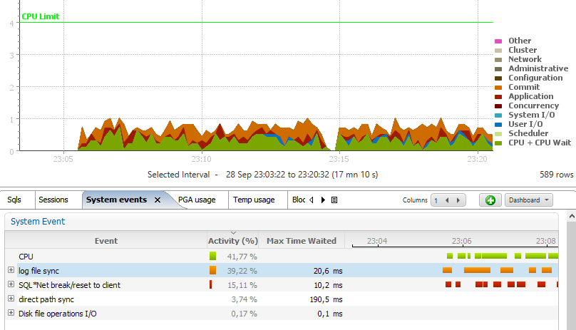

|
|
This was first published on https://blog.dbi-services.com/_suppress_identifiers_on_dupkey-the-sap-workaround-for-bad-design (2017-09-29)
Republishing here for new followers. The content is related to the the versions available at the publication date
In SQL, ‘upsert’ is a conditional insert or update: if the row is there, you update it, but if it is not there, you insert it. In Oracle, you should use a MERGE statement for that. You are clearly doing it wrong if you code something like:
begin insert... exception when dup_val_on_index then update... end;But it seems that there are many applications with this bad design, and Oracle has introduced an underscore parameter for them: “_suppress_identifiers_on_dupkey”. You won’t be surprised that this one is part of the long list of parameters required for SAP.
Let’s investigate this.
So the idea is to try first an insert, rely on the unique constraint (primary key) to get an exception if the row exists, and in this case update the existing row. There are several flows with that.
The first problem, is that it is not as easy as it looks like. If a concurrent session deletes the row between you insert and update, then the update will fail. You have to manage this. The failed insert cannot leave a lock on the rows that was not inserted.
The second problem is that the SQL engine is optimized for transactions which commit. When the ‘dup_val_on_index’ on index occurs, you have already inserted the table row, updated some indexes, etc. And all that has to be rolled back when the exception occurs. This generates unnecessary contention on the index leaf block, and unnecessary redo.
Then the third problem, and probably the worst one, is that an exception is an error. And error management has lot of work to do, such as looking into the dictionary for the violated constraint name in order to give you a nice error message.
I’ve created the following table:
create table demo as select * from dual; create unique index demo on demo(dummy);
And I’ve run 10 million inserts on it, all with duplicates:
exec for i in 1..1e7 loop begin insert into demo values('x'); exception when others then null; end; end loop;
Here is some extracts from the AWR on manual snapshots taked before and after.
Elapsed: 20.69 (mins) DB Time: 20.69 (mins)This has run for 20 minutes.
Instance Efficiency Percentages (Target 100%)
~~~~~~~~~~~~~~~~~~~~~~~~~~~~~~~~~~~~~~~~~~~~~
Buffer Nowait %: 100.00 Redo NoWait %: 100.00
Buffer Hit %: 100.00 In-memory Sort %: 100.00
Library Hit %: 100.00 Soft Parse %: 100.00
Execute to Parse %: 33.34 Latch Hit %: 100.00
Parse CPU to Parse Elapsd %: 92.31 % Non-Parse CPU: 94.90
Flash Cache Hit %: 0.00
The ‘Execute to Parse %’ show that 2/3 of statements are parsed each time.
SQL ordered by Gets DB/Inst: CDB1/CDB1 Snaps: 19-20
-> Resources reported for PL/SQL code includes the resources used by all SQL
statements called by the code.
-> %Total - Buffer Gets as a percentage of Total Buffer Gets
-> %CPU - CPU Time as a percentage of Elapsed Time
-> %IO - User I/O Time as a percentage of Elapsed Time
-> Total Buffer Gets: 180,125,740
-> Captured SQL account for 127.7% of Total
Buffer Gets Elapsed
Gets Executions per Exec %Total Time (s) %CPU %IO SQL Id
----------- ----------- ------------ ------ ---------- ----- ----- -------------
1.80094E+08 1 1.800942E+08 100.0 1,239.8 99.5 .3 frvpzg5yubp29
Module: java@VM104 (TNS V1-V3)
PDB: PDB1
BEGIN for i in 1..1e7 loop begin insert into demo values('x'); exception when ot
hers then null; end; end loop; END;
1.60094E+08 10,000,000 16.0 88.9 983.1 100.3 .4 319ypa1z41aba
Module: java@VM104 (TNS V1-V3)
PDB: PDB1
INSERT INTO DEMO VALUES('x')
49,999,995 9,999,999 5.0 27.8 201.1 103.2 0 2skwhauh2cwky
PDB: PDB1
select o.name, u.name from obj$ o, user$ u where o.obj# = :1 and o.owner# = u.u
ser#
19,999,998 9,999,999 2.0 11.1 148.5 98.9 0 2jfqzrxhrm93b
PDB: PDB1
select /*+ rule */ c.name, u.name from con$ c, cdef$ cd, user$ u where c.con# =
cd.con# and cd.enabled = :1 and c.owner# = u.user#
My failed inserts have read on average 16 blocks for each attempt. that’s too much for doing nothing. And in addition to that, I see two expensive statements parsed and executed each time: one to get the object name and one to get the constraint name. This is how we can retreive the error message which is:
ORA-00001: unique constraint (SCOTT.DEMO) violated
This is a big waste of resource. I did this test in PL/SQL but if you cumulate all worst practices and run those inserts row by row, then you will see those colors: 
The Orange is ‘Log File Sync’ because you generate more redo than necessary. The Green is ‘CPU’ because you read more blocks than necessary. The read is ‘SQL*Net break/reset to client’ when the server process sends the error.
When you set “_suppress_identifiers_on_dupkey” to true, Oracle will not return the name of the constraint which is violated, but only the information which is already there in the session context.
Here is the message that you get:
ORA-00001: unique constraint (UNKNOWN.obj#=73375) violatedWhere 73375 is the OBJECT_ID of the index where the unique constraint exception has been violated.
You have less information, but it is faster:
Elapsed: 15.45 (mins) DB Time: 15.48 (mins)
There is no Soft Parse overhead:
Instance Efficiency Percentages (Target 100%)
~~~~~~~~~~~~~~~~~~~~~~~~~~~~~~~~~~~~~~~~~~~~~
Buffer Nowait %: 100.00 Redo NoWait %: 100.00
Buffer Hit %: 100.00 In-memory Sort %: 100.00
Library Hit %: 100.00 Soft Parse %: 96.43
Execute to Parse %: 99.98 Latch Hit %: 100.00
Parse CPU to Parse Elapsd %: 90.38 % Non-Parse CPU: 99.95
Flash Cache Hit %: 0.00
Our statement is the only one using the CPU and reads less blocks:
SQL ordered by Gets DB/Inst: CDB1/CDB1 Snaps: 21-22
-> Resources reported for PL/SQL code includes the resources used by all SQL
statements called by the code.
-> %Total - Buffer Gets as a percentage of Total Buffer Gets
-> %CPU - CPU Time as a percentage of Elapsed Time
-> %IO - User I/O Time as a percentage of Elapsed Time
-> Total Buffer Gets: 110,132,467
-> Captured SQL account for 81.8% of Total
Buffer Gets Elapsed
Gets Executions per Exec %Total Time (s) %CPU %IO SQL Id
----------- ----------- ------------ ------ ---------- ----- ----- -------------
1.10091E+08 1 1.100906E+08 100.0 926.2 98.8 1 frvpzg5yubp29
Module: java@VM104 (TNS V1-V3)
PDB: PDB1
BEGIN for i in 1..1e7 loop begin insert into demo values('x'); exception when ot
hers then null; end; end loop; END;
90,090,580 10,000,000 9.0 81.8 515.7 99.1 1.9 319ypa1z41aba
Module: java@VM104 (TNS V1-V3)
PDB: PDB1
INSERT INTO DEMO VALUES('x')
This parameter is a workaround for bad design, but not a solution.
In order to avoid all this rollback and exception management overhead, there is another idea. Start with the update and, when no row was found, insert it. This is easy with the ROWCOUNT.
begin update ... if SQL%ROWCOUNT = 0 then insert ...
This is more efficient but still subject to a concurrent session inserting the row between your update and you insert. But at least, you manage the different scenario with a condition on ROWCOUNT rather than with an exception, which is more scalable.
Always use the database in the expected way. Exceptions and Errors are not for the normal scenario of the use-case. Exceptions should be unusual. The solution is to use the MERGE statement which has been implemented exactly for this reason: do an upsert without the error management overhead and with the statement isolation level which prevents errors in a multi-user environment.
|
|
{kind=link}
Thanks for this post.
Nice read, thank you
In my opinion, this is an inherent deficiency with the implementation. It’s something that “SQL” failed to deliver on – as you were expected to express intent – and SQL takes care of the implementation details.
Merge and single row merge didn’t exist in SQL for years. In my opinion it’s a big draw back. I know it’s a super-set of the basic commands – but then implementation can be handled however is more efficient.
My number issue with SQL however is that all commands but 1 commands use name-based column mapping. The other one uses positional.
SELECT, DELETE, UPDATE – all use name based resolution INSERT – uses positional.
Which is a big pain when you have a lot of columns – especially when you need to add something.
In my opinion, there should be a clause of update – something in the realm of: UPDATE TAB SET X=Y where key=A WHEN NOT MATCHED INSERT
Which will solve a lot of bad code out there. Including the race condition you mentioned. Other language updates I would like to see also INSERT AS SELECT FROM – to have a variant that has name-based column matching.